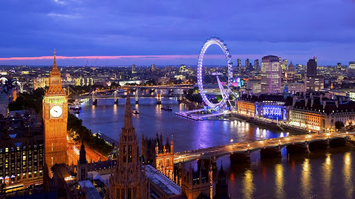
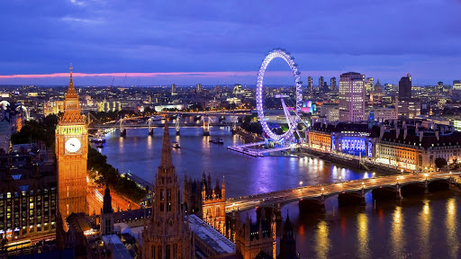
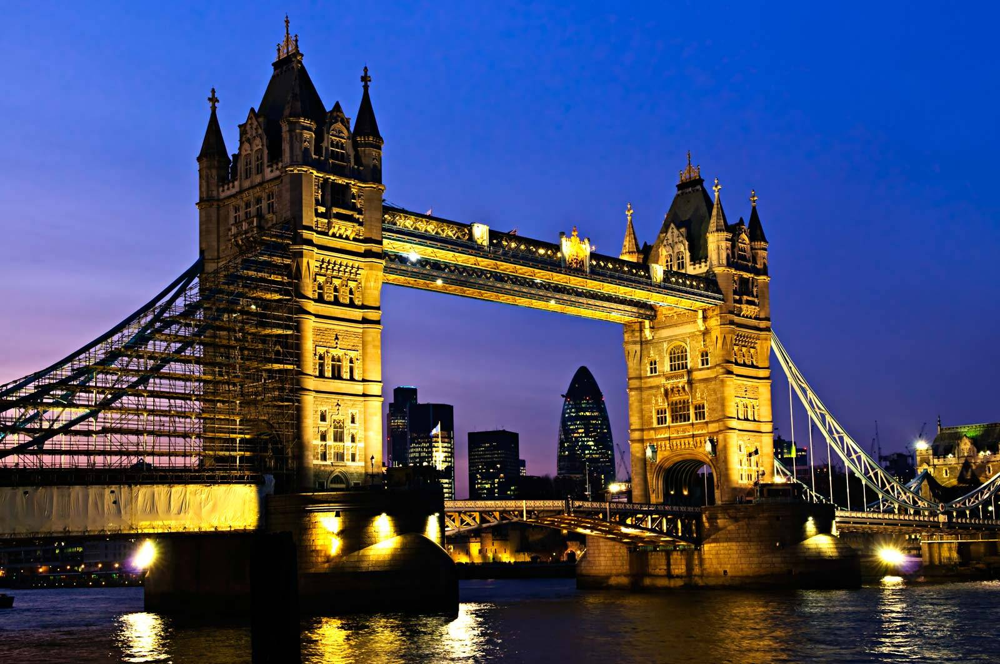

Londra Hakkında Bilinmesi Gerekenler
Londra, İngiltere ve Birleşik Krallık'ın başkentidir. Köklü bir geçmişe sahip olan önemli dünya şehri Londra'daki ilk yerleşimler 2 bin yıl öncesine dayanmaktadır. Şehre ilk yerleşenlerin Keltler olduğu bilinmektedir; ancak şehir ismini Romalılar'dan almıştır. MÖ 43'de Roma İmparatorluğu şehre Londonium ismini vermiştir. "Akan Nehir" anlamına gelen Londonium kelimesi zamanla Londra'ya dönüşmüş şehir, farklı kültürlerle etkileşimi ve uzun tarihi geçmişi sebebiyle birçok farklı kültürle tanışmış, kaynaşmış ve dünyanın en kozmopolit şehirlerinden biri olmuştur. Roma İmparatorluğu döneminde en önemli şehirlerden birisi olan Londra, 5. yüzyılda imparatorluğun çöküşünden 11. yüzyıla kadar Viking saldırılarının da etkisiyle yavaş yavaş terk edilmiş ve harap edilmiştir. 960 yılında yapımına başlanan, Birleşik Krallık'ın en görkemli dini yapısı olan Westminster Abbey, şehirdeki hayatı canlandırmada kilit bir rol oynamıştır. Şehirde ticaretin hızla gelişmesi ve nüfusunun hızla artmasıyla İngiltere'nin başkenti olmuştur. Böylece Londra'nın günümüze kadarki hızlı gelişimi başlamıştır. Dünya tarihine yön veren büyük devletlerden biri olan İngiltere'nin VIII. Henry, l.Elizabeth, Victoria gibi iz bırakan kral ve kraliçeleri Londra'da ikamet etmiştir. Günümüzde hala monarşinin devam ettiği ülkede Kraliçe Il. Elizabeth Buckingham Sarayı'nda ikamet etmektedir ve sarayın belli kısımları ziyarete açıktır.
Her kıtada toprakları olduğu için "üzerinde güneş batmayan ülke" olarak bilinen Britanya imparatorluğu döneminde de başkent olan Londra, sanayiden finansa, müzikten sanata pek çok alanda popüler bir şehir olmuştur. imparatorluk döneminden beri dünyanın her tarafından göç alan şehir, bu sayede 300'den fazla dilin konuşulduğu kozmopolit yapısına kavuşmuştur. Bu kozmopolit yapısı sayesinde özellikle şehrin yemek kültürü de çok gelişmiştir. Londra'da bütün dünya mutfaklarından restoran bulmak mümkündür. Michelin yıldızlı restoranlardan dönercilere, Çin restoranlarından Fransız restoranlarına damak tadınıza uyan her türlü yemeğin yapıldığı restoranları Londra'da bulabilirsiniz. Ayrıca 8 milyonu geçen nüfusuyla Londra'nın gece hayatı da dünyaca ünlüdür. Yıl boyunca şehirdeki mekanlarda dünya yıldızlarının konserleri, en popüler DJ'lerin çaldığı partiler gibi daha pek çok müzik ve eğlence odaklı etkinlikler de düzenlenmektedir.
Londra'nın bu hareketli ve kozmopolit hayatının dışında dünyaca ünlü, muhteşem müzeleri de mevcuttur. Bu müzelerden devlete ait olan British Musem, National Gallery, National History Museum gibi müzelere giriş ücretsizdir. Özellikle British Musem'da bulunan koleksiyonlar arasında çok nadide, değerli parçalar bulunmaktadır. Bir kısmı 11. yüzyılda yapılan, Parlamento Binası'nın da içinde bulunduğu Westminster Sarayı, Birleşik Krallık hükümdarlarının taç giydiği ve Avam Kamarası ile Lordlar Kamarası'nın bulunduğu, tarihe tanıklık etmiş en güzel yapılardan birisidir. Londra'da görülmesi gereken bir çok önemli tarihi yer olduğu gibi yeşil alanın çokluğu da dikkat çekmektedir. Kentte 143 adet park ve buna ilaveten bir diğer doğal zenginlik olan Thames Nehri bulunmaktadır. Günün erken saatlerinde şehrin en büyük parklarındanHyde Park'ta veya Thames Nehri kenarında sabah koşusu yapan "Londoner"lar -Londra'da oturanlara Londoner denmektedi- görmek mümkündür.